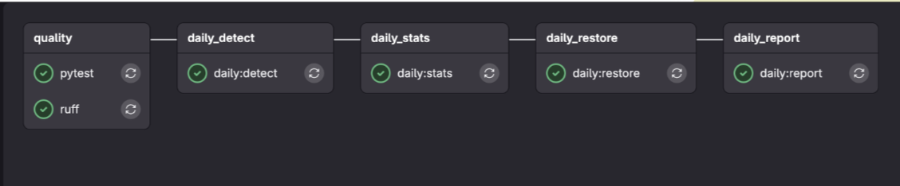
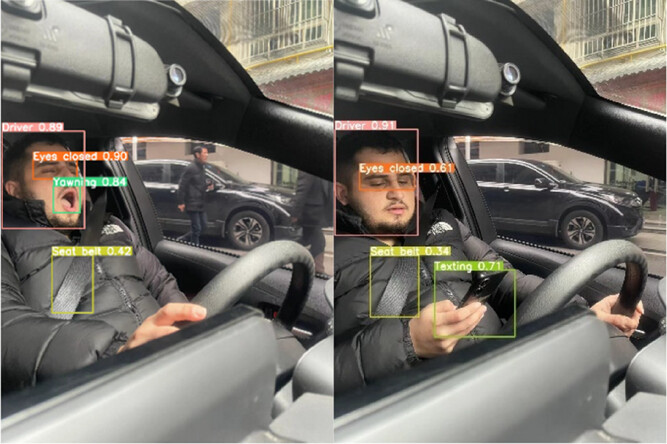
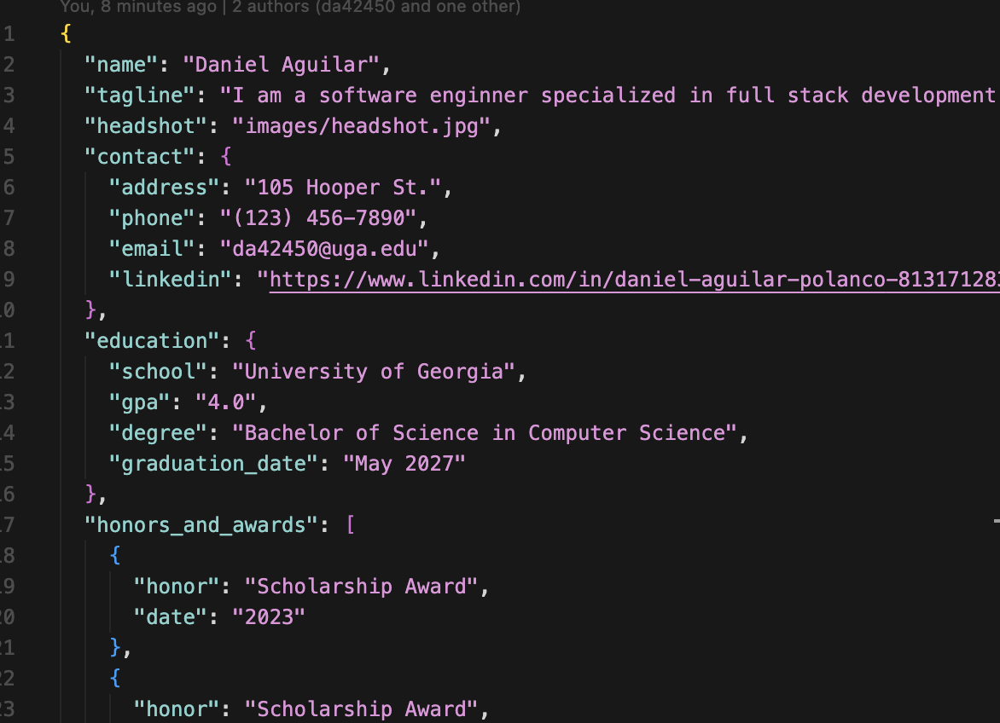

Daniel Aguilar
105 Hooper St. ■ (123) 456-7890 ■ da42450@uga.edu
I am a software enginner specialized in full stack development and machine learning. I am also interested in Virtual/Extended Reality.
Education
- University of Georgia
- 4.0
- Bachelor of Science in Computer Science
- May 2027
Honors and Awards
- Scholarship Award
- 2023
- Scholarship Award
- 2024
Skills
- HTML/CSS/JS
- Java
- Machine Learning
- Virtual/Extended Reality
Projects
Automated Pipeline for data quality detecton and restoration

- Created an automated pipeline for data quality detection and restoration
- Used Python, SQL, and Docker
Sleepy Driver Detection System

- Used YoloV8 to detect drowsy drivers
- Used Flask to create a REST API
Resume Builder

- JSON to HTML conversion
- Practice with DOM